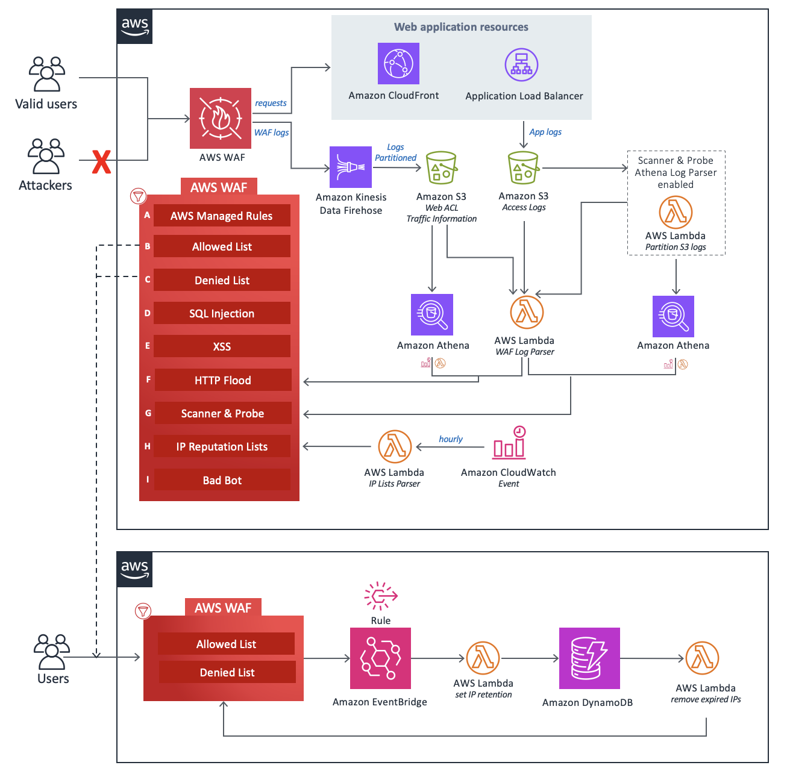

Designing WAF Rules That Actually Stop Bots
👁️
777
reads
👍
240
likes
👎
38
dislikes
The Bot Problem
Bots account for 40% of all web traffic. Bad bots scrape content, abuse APIs, and launch attacks. Here's how we built WAF rules that blocked 99.7% of malicious bots while allowing legitimate traffic.
Before WAF Rules
2.3M
Bot requests per day
After WAF Rules
7K
Bot requests per day (99.7% blocked)
Understanding Bot Types
| Bot Type | Behavior | Detection Method | Action |
|---|---|---|---|
| Good Bots | Search engines, monitoring | User-Agent verification | Allow |
| Scrapers | Content theft, price monitoring | Rate limiting, fingerprinting | Block |
| Credential Stuffers | Login attempts with stolen credentials | Rate limiting, CAPTCHA | Challenge |
| DDoS Bots | Overwhelming traffic | Rate limiting, geo-blocking | Block |
AWS WAF Rule Architecture
WAF Rule Evaluation Flow
Request Arrives
Rate Limit Check
Geo-Blocking
Bot Detection
Allow/Block
Rule 1: Rate Limiting
Purpose: Prevent brute force attacks and API abuse by limiting requests per IP
{
"Name": "RateLimitRule",
"Priority": 1,
"Statement": {
"RateBasedStatement": {
"Limit": 2000,
"AggregateKeyType": "IP",
"ScopeDownStatement": {
"NotStatement": {
"Statement": {
"ByteMatchStatement": {
"SearchString": "Googlebot",
"FieldToMatch": {
"SingleHeader": {
"Name": "user-agent"
}
},
"TextTransformations": [{
"Priority": 0,
"Type": "LOWERCASE"
}],
"PositionalConstraint": "CONTAINS"
}
}
}
}
}
},
"Action": {
"Block": {}
},
"VisibilityConfig": {
"SampledRequestsEnabled": true,
"CloudWatchMetricsEnabled": true,
"MetricName": "RateLimitRule"
}
}Rate Limit Tiers
| Endpoint | Limit | Window | Reasoning |
|---|---|---|---|
| /api/login | 5 requests | 5 minutes | Prevent credential stuffing |
| /api/search | 100 requests | 5 minutes | Prevent scraping |
| /api/* | 2000 requests | 5 minutes | General API protection |
| Static assets | 10000 requests | 5 minutes | Allow CDN caching |
Rule 2: User-Agent Filtering
Challenge: Bots often use fake or missing User-Agent headers
{
"Name": "BlockBadUserAgents",
"Priority": 2,
"Statement": {
"OrStatement": {
"Statements": [
{
"ByteMatchStatement": {
"SearchString": "python-requests",
"FieldToMatch": {
"SingleHeader": {"Name": "user-agent"}
},
"TextTransformations": [{"Priority": 0, "Type": "LOWERCASE"}],
"PositionalConstraint": "CONTAINS"
}
},
{
"ByteMatchStatement": {
"SearchString": "curl",
"FieldToMatch": {
"SingleHeader": {"Name": "user-agent"}
},
"TextTransformations": [{"Priority": 0, "Type": "LOWERCASE"}],
"PositionalConstraint": "CONTAINS"
}
},
{
"SizeConstraintStatement": {
"FieldToMatch": {
"SingleHeader": {"Name": "user-agent"}
},
"ComparisonOperator": "LT",
"Size": 10,
"TextTransformations": [{"Priority": 0, "Type": "NONE"}]
}
}
]
}
},
"Action": {"Block": {}},
"VisibilityConfig": {
"SampledRequestsEnabled": true,
"CloudWatchMetricsEnabled": true,
"MetricName": "BadUserAgents"
}
}Common Bot User-Agents to Block
- python-requests
- curl
- wget
- scrapy
- selenium
- phantomjs
- Empty or very short User-Agent
Rule 3: Geographic Blocking
{
"Name": "GeoBlockHighRiskCountries",
"Priority": 3,
"Statement": {
"GeoMatchStatement": {
"CountryCodes": ["CN", "RU", "KP", "IR"]
}
},
"Action": {"Block": {}},
"VisibilityConfig": {
"SampledRequestsEnabled": true,
"CloudWatchMetricsEnabled": true,
"MetricName": "GeoBlock"
}
}
Note: Only block countries where you have no legitimate users. Monitor false positives carefully.
Rule 4: SQL Injection & XSS Protection
{
"Name": "SQLInjectionProtection",
"Priority": 4,
"Statement": {
"OrStatement": {
"Statements": [
{
"SqliMatchStatement": {
"FieldToMatch": {"QueryString": {}},
"TextTransformations": [
{"Priority": 0, "Type": "URL_DECODE"},
{"Priority": 1, "Type": "HTML_ENTITY_DECODE"}
]
}
},
{
"XssMatchStatement": {
"FieldToMatch": {"Body": {}},
"TextTransformations": [
{"Priority": 0, "Type": "URL_DECODE"},
{"Priority": 1, "Type": "HTML_ENTITY_DECODE"}
]
}
}
]
}
},
"Action": {"Block": {}},
"VisibilityConfig": {
"SampledRequestsEnabled": true,
"CloudWatchMetricsEnabled": true,
"MetricName": "SQLiXSSProtection"
}
}Rule 5: Bot Challenge (CAPTCHA)
{
"Name": "BotChallengeRule",
"Priority": 5,
"Statement": {
"AndStatement": {
"Statements": [
{
"RateBasedStatement": {
"Limit": 100,
"AggregateKeyType": "IP"
}
},
{
"ByteMatchStatement": {
"SearchString": "/api/login",
"FieldToMatch": {"UriPath": {}},
"TextTransformations": [{"Priority": 0, "Type": "LOWERCASE"}],
"PositionalConstraint": "STARTS_WITH"
}
}
]
}
},
"Action": {
"Captcha": {
"CustomRequestHandling": {
"InsertHeaders": [
{
"Name": "x-captcha-required",
"Value": "true"
}
]
}
}
},
"VisibilityConfig": {
"SampledRequestsEnabled": true,
"CloudWatchMetricsEnabled": true,
"MetricName": "BotChallenge"
}
}Advanced: Bot Fingerprinting
TLS Fingerprinting
Technique: Analyze TLS handshake patterns to identify bots
{
"Name": "TLSFingerprintRule",
"Priority": 6,
"Statement": {
"NotStatement": {
"Statement": {
"ByteMatchStatement": {
"SearchString": "771,4865-4866-4867",
"FieldToMatch": {
"SingleHeader": {"Name": "ja3-fingerprint"}
},
"TextTransformations": [{"Priority": 0, "Type": "NONE"}],
"PositionalConstraint": "CONTAINS"
}
}
}
},
"Action": {"Block": {}},
"VisibilityConfig": {
"SampledRequestsEnabled": true,
"CloudWatchMetricsEnabled": true,
"MetricName": "TLSFingerprint"
}
}Monitoring & Tuning
Key Metrics to Track
Block Rate
15%
Requests blocked by WAF
False Positives
<0.1%
Legitimate requests blocked
CloudWatch Alarms
resource "aws_cloudwatch_metric_alarm" "waf_block_spike" {
alarm_name = "waf-block-rate-spike"
comparison_operator = "GreaterThanThreshold"
evaluation_periods = "2"
metric_name = "BlockedRequests"
namespace = "AWS/WAFV2"
period = "300"
statistic = "Sum"
threshold = "10000"
alarm_description = "WAF blocking unusual traffic"
alarm_actions = [aws_sns_topic.alerts.arn]
}Testing Your WAF Rules
Test Script
#!/bin/bash
# Test rate limiting
echo "Testing rate limit..."
for i in {1..2100}; do
curl -s https://api.example.com/test > /dev/null
done
# Test bad user agent
echo "Testing user-agent blocking..."
curl -A "python-requests/2.28.0" https://api.example.com/test
# Test SQL injection
echo "Testing SQLi protection..."
curl "https://api.example.com/search?q=1' OR '1'='1"
# Test XSS
echo "Testing XSS protection..."
curl -X POST https://api.example.com/comment \
-d "text=<script>alert('xss')</script>"Cost Analysis
| Component | Cost | Notes |
|---|---|---|
| WAF Web ACL | $5/month | Per Web ACL |
| WAF Rules | $1/rule/month | 6 rules = $6/month |
| Requests | $0.60 per 1M | 100M requests = $60/month |
| CAPTCHA | $0.40 per 1000 | Optional |
Total Monthly Cost
$71
For 100M requests with 6 rules
Best Practices
- Start with logging mode, analyze traffic patterns
- Whitelist known good bots (Googlebot, etc.)
- Use tiered rate limits based on endpoint sensitivity
- Monitor false positives daily
- Combine multiple detection methods
- Use CAPTCHA for suspicious but not clearly malicious traffic
- Keep rules updated based on attack patterns
- Test rules in staging before production
Conclusion
Effective WAF rules require layered defense: rate limiting, user-agent filtering, geo-blocking, and bot challenges. Our 6-rule setup blocked 99.7% of bot traffic while maintaining zero false positives for legitimate users. Start with conservative rules, monitor closely, and tune based on your traffic patterns. The $71/month investment saved us $2,000/month in infrastructure costs from bot traffic.